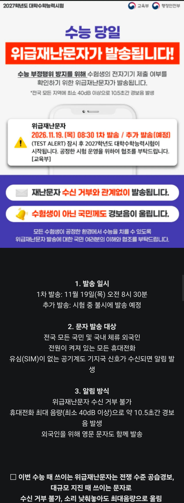

내일 발송되는 수능 "위급재난문자" 특징 요약
댓글
고사장 근처 사람이 통제된다고
학교밖에서 울린다고 고사장 내부까지 방해될만큼
폰스피커 성능이 대단하진 않아
그게 아니라 고사장 주변에 사람이 접근 못 해. 그래서 고사장 밖의 사람 폰에서 울린 게 시험에 영향 주지는 못한다는 뜻이야
ㅅㅂ 교대근무하는데 저거땜에 깨잖아 좆냥이새끼들때매
0830에 비행기모드 루틴 걸어놔
불시에 울리는건... 화이팅
핸드폰을 끄고자면 되지 않나?
그럼난 어캐 일어나노
이거보고 올해 수능포기했다 고맙다
잘한다 이정도는 해야지ㅇㅇ
엄청 동시 다발적으로 울리면 적발 못 하는 거 아니냐
그정도로 울리면 진짜 중급닌자 시험이잖아
개염병같긴한데 답 못찾겠으면 저렇게라도 해야지 ㅋㅋ
수능은 위급재난이다
이걸 미리 공지하는게 하수임... 스피커만 부셔도 무용지물임. 공지안하고 몰래 작동시켰어야하는거 아닌가 싶은데
그랬으면 수능 응시 안하는 국민들이 어떻게 할지 알잖아?
예고를 안했고 폰걸린놈이 있어서 저게 울렸다고 치자. 예고없이 난 소리에 놀란 사람들이 제기할 민원 감당 가능함?
이 댓글보고 파이널데스티네이션 생각남
길 걷던 사람이 소리에 깜짝 놀라서 넘어지는 바람에 뒤에 있던 차가 밟고 지나가서 죽는거임
뭔소리임?? 재난 문자 안받아봄? 원래도 지진 같은 국가적 재난에 울리는게 재난문자임.
애초에 부정행위 잡는게 목적이 아니라 부정행위 방지하는게 목적임
이 뉴스를 보고 부정행위를 하려는 사람들이 마음을 접을까요? 바로 대비를 할 것 같은데요? 방지를 하려면 금속탐지기 같은걸 도입해야 의미 있죠.
여러 방안 중에 하나인거지. 이 방법 하나만 들여다보고 생각하냐
이런댓글을 달고
좋아요를 누르는 사람들이 있다는게 신기하네
하루만 참으면 될걸 참..
별걸 다하네
정책 입안의 의도를 파악한다는게 결국 가정의 영역이지만 의도적으로 사전 공표한데는 실질적인 적발보단 경고성 블러핑에 가깝다고 봄
어차피 수능 연기는 애초부터 고려대상이 아닌데다 100% 완벽하게 막는건 불가능하니 현장에서의 혼란을 최소화 하는게 현재로썬 최선이겠지
학생들 인생걸린날이라 뭐 이해능 함 하루니까 이해하자고 ㄹㅇ
다들 학교 졸업했으면 수능이 얼마나 중요한지 알잖아 청해시간에 비행기도 못떴었는데 뭐…하루만 불편하자
ㅇㅋ 알람으로 쓸게요..
시간상 어제 두번 보냈더라
외국은 안오는거 맞죠…?
이것도 코로쓰 재난문자처럼 되겠지?
수능은 국가적 행사라 ㅇㅈ한다
씁쓸하노.. 시험 하나에 인생이 걸려 있다는게 참
저거하면 ai 관련기기에 알람이 울리는거임? 뭔가 허술한거 같은데
저걸로 암살 시도 가능하지 않음?
그건 몰래 핸드폰 넣고 알람만 맞춰도 똑같지
응 꺼둘게
사람들 많이 모인곳은 고막테러 지리겠네
비행기모드여도 울리나?
먼가 우리가 모르던 국가재난시에만 발동하는 프로토콜 발동시키는 기분이래서 재밋네. 쓸일이 없어야하고 쓸일 없을줄 알던 비상버튼을 누르는기분
고사장 주변은 통제하고 고사장만 딱 한정해서 울린다는 거임?
전국민한테 울린다는 거랑 상반되는데